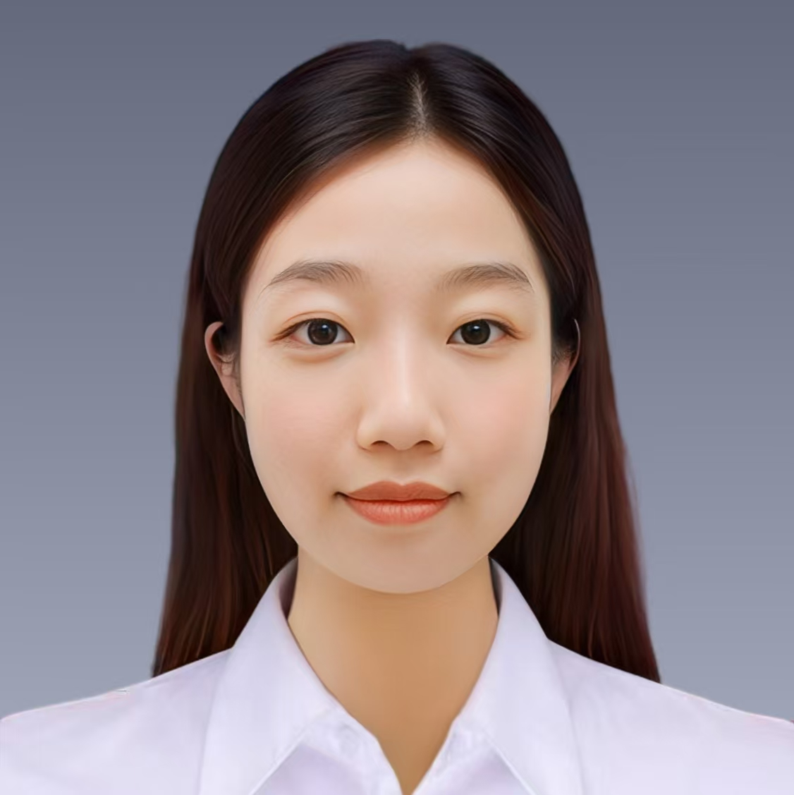

2026.09 — 至今
深圳大学
计算机与软件学院 · 计算机技术
硕士阶段AIGC · 图像生成 · 计算机视觉
深圳大学 · 计算机技术硕士研究生
目前关注AIGC与图像生成。作为刚入学的硕士研究生，我正在学习和探索这一领域。本科阶段关注语义分割与农业图像分析，并进行了相关的研究和实践。

张茜璐 · LUCKYLUCY01 / ABOUT ME
在学习中积累，在实践中寻找答案。
从计算机科学出发，
把兴趣落在真实的问题上。
我本科就读于湖南农业大学计算机科学与技术专业，目前在深圳大学计算机与软件学院学习计算机技术，并加入可视计算研究中心。目前的研究方向是AIGC与图像生成；由于刚入学，我仍处于学习探索阶段。
本科期间，我参与烟叶表型分割与识别相关研究，主持省级大学生创新项目，承担模型研究、数据集创建、实验验证及项目协调等工作。
国家奖学金 · 校三好学生标兵 · 校一等奖学金
参与中国科学院大学“成长伙伴”国际暑期学校
2026.09 — 至今
计算机与软件学院 · 计算机技术
硕士阶段2022.09 — 2026.07
信息与智能科学技术学院
计算机科学与技术
02 / SKILLS & INTERESTS
连接技术能力、研究方向与协作经验。
掌握Python语言，熟悉经典语义分割模型及图像处理相关算法。
目前关注AIGC与图像生成，正在学习相关知识与方法。本科阶段积累了数据集构建、模型研究、实验验证与论文撰写经验。
具有项目主持、学习经验分享、学生工作与志愿服务经历。
03 / SELECTED WORK
本科阶段论文研究 · 第一作者
基于RCBM-UNet改进骨干网络、注意力机制与损失函数，研究复杂场景下的烟叶表型分割。
我的工作 数据集创建、方法研究、实验验证、论文撰写与可视化。
本科阶段省级大创 · 项目主持
基于DeepLabv3+构建烟叶分割与识别模型，结合前后端分离技术实现识别系统。
我的工作 任务分配、项目协调、技术攻关及申请、中期、结题报告撰写。
本科阶段知识产权 · 实践成果
发明专利《一种烟叶识别方法、系统、存储介质、设备及程序产品》，以及《烟叶识别系统（Java版）》软件著作。
我的角色 发明专利独立发明人；烟叶识别系统软件著作第一作者。